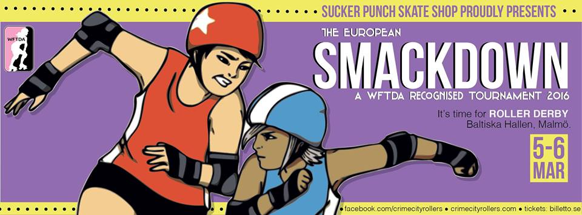
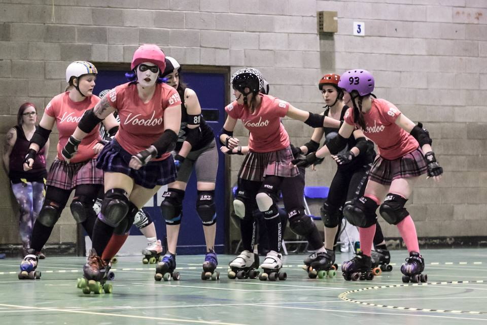
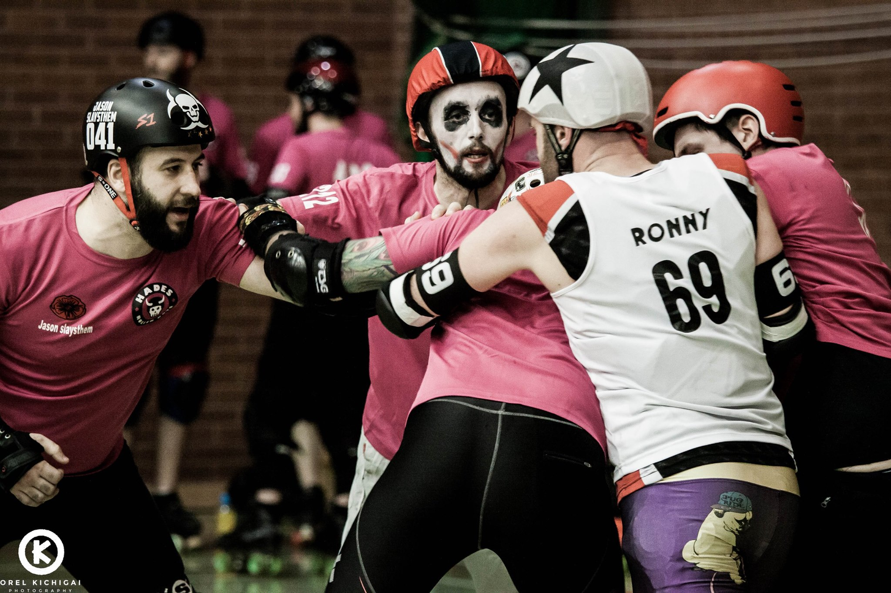

Glasgow at Europe's first WFTDA Division 1 Tournament
For several years, one of the rumbling complaints about WFTDA tournaments was that all of the high-level play was confined to the North American continent. If you were a great European, Latin American or Australasian team, you had to incur significant travel costs to really face off against the "big" leagues.
Thanks partly to the signal breakthrough of European teams in WFTDA Division 1 last year, this is all changing. No more obvious sign of this is this weekend's European Smackdown - mainland Europe's first ever WFTDA Division 1 Tournament.

The tournament, running all day March 5th and March 6th sees many of the European Division 1 leagues: hosts Crime City Rollers (Sweden, WFTDA #25), Glasgow Roller Derby (Scotland, WFTDA #29), Helsinki Roller Derby (Finland, WFTDA #33), London Rollergirls (England, WFTDA #3) and Stockholm Roller Derby (Sweden, WFTDA #17) face off, joined by Detroit Derby Girls Allstars (USA, WFTDA #20).
The tournament structure appears to be an incomplete round-robin*, but Glasgow Roller Derby's Irn Bruisers are one of the teams with an almost full set of opponents, scheduled to play every other team except Detroit over the weekend.
Irn Bruiser Line-Up Sadie O'Hades talked to us about the team's preparations, "I'm so excited to be doing the line up for the Bruisers this year. Watching the new roster in their training since January has given me the chance to appreciate the individual skill and strength of every member of our team, both returning members and those new this quarter. It's been inspiring for me and I've been upping my game to make sure my dedication matches theirs. We've all been focused on the Malmo tournament as we know its going to be an amazing opportunity to play at the highest level and we can't wait to get over there to compete against the very best that European Roller Derby has to offer. Over the years GRD has developed strong relationships with our fellow European leagues and we will have a great time hanging out with our friends and heroes, but make no mistake - our game faces are on!"
Meanwhile, hosts Crime City Rollers have spent as much time and effort as you might expect to make mainland Europe's first Division 1 Tournament as exciting and professional as possible. Crime City's Katpiss Neverclean told us: "The league are so excited and we've all worked really hard to make this the best tournament possible - and the afterparty will also be amazing - dancecrew performance, wrestlers, DJs and all you can wish for!"
For those who cannot make it to Malmö for the weekend, Crime City have arranged high-definition streaming of the entire event (excepting the CCR/London bout). This is available at https://ccr.solidtango.com. This is a paid streaming service, with individual games priced at 79 Swedish Krona (about £6.60 at the present exchange rate) and a discount for the whole weekend at 229 Krona (around £19 - equivalent to about £2 per game).
*Given the structure of the tournament, we are planning to perform a statistical analysis of the results to produce an inferred relative ranking of all the competitors. Stay tuned for the article, hopefully soon after the weekend!
...
Power of Scotland's Assistant Coach: Rosie Peacock
As Caley Kapowski reported for the blog, Scottish Men's National Team, Power of Scotland, are going all out to raise money for the trip to Calgary for the second ever Men's Roller Derby World Cup.
One member of the Power of Scotland Team who has recently started her own fundraising endeavour is new Assistant Coach, Rosie Peacock. As she's offering roller derby coaching, we caught up with her to talk a bit about her coaching experience, and what she's offering for those who may be interested. Rosie is also currently on Auld Reekie Roller Girls All-Stars roster.
- Before we start talking about Power of Scotland specifically, we should start by spending a bit of time just to introduce you yourself...
Also, I've been part of Team Metal Legs, which is for people who've been injured playing roller derby and forced to be off-skates for 3 months or more. We've done a lot of work, and that's just trying to build people's physical and mental confidence back up, after pretty traumatic breaks. And that's been a lot of fun to do as well.
- And a lot of people seem to like you, too: you won the Talk Derby To Me [Podcast] "Personality" award for 2015.
But I remember coming up for a scrim, and it was my first scrim back after my knee operation, and there was this massive guy, that looked like a Viking, looking quite nervous. [laughs] It was his first ever scrim. And that was, now Power of Scotland skater, Optimus Grime. I could just see so much potential in him, and rightly so, he's an incredible skater, puts in incredible hard work as well.
But yeah, he seems to be quite fond of me, which is really nice because it's nice to have someone who's that cool who's on your side. He and Marryk [Talk Derby To Me co-host King Crazy] have been [inaudible] for quite a long time, we've announced together a few times, yeah, and I think because those guys… I think Grime nominated me and then Marryk's obviously quite fond of me too. (I don't know why! Maybe it's because I baked cookies for him one time!). But [winning the award] was really amazing, actually, I had a little cry about that. Don't tell anyone, but yeah.
- But, coming back to Power of Scotland, you fairly recently became Assistant Coach. How has that experience been?
So, I get to see these guys progress, from tryouts to gelling as a team, and really starting to hone in on some of the tactics and bring it together as a unit. Because they're all, as individuals, enormously talented guys, but I think the key for these National teams is to get the team working together as a unit. These guys will all be the best skaters in their home leagues, and used to fulfilling certain roles within their home leagues, but within the Power of Scotland unit, you know, they very much need to learn to trust one another as a unit. Which is a challenge when you're used to being the guy who's maybe the last one, the last line of defence, or the jammer who doesn't need to take offence. When you're going to be playing Team USA, then you're going to be needing some offence!
- It's hard to emphasise how important this is for a National team in particular - "top dogs playing together", some of whom aren't domiciled in Scotland, who need to adjust to the different context.
But yeah, there's guys obviously eligible for tryouts from down in London, all kinds of leagues, and actually, those guys have gelled in really really well. It's really good - but I think it is a bit of a mindset change, because going from being possibly the best one or two guys in the league and being in a probably one-off-one-on kind of rotation to perhaps being in a one-in-three or whatever, that's a bit of an adjustment too.
- Managing personalities, the "superstars"?
- Ah, the glory hounds?
 Rosie captaining the Hellfire Harlots against Newcastle Roller Girls in the British Champs Tier 2 Playoffs Final. (Credit: Jason "Roller Derby on Film" Ruffell)
Rosie captaining the Hellfire Harlots against Newcastle Roller Girls in the British Champs Tier 2 Playoffs Final. (Credit: Jason "Roller Derby on Film" Ruffell)
- And of course, "The Stef Mainey" of Roller Derby is a very strong team player herself!
- So, you will be travelling to Calgary, the rest of the Team will be travelling to Calgary…
The way that PoS are running it, is that there's an expectation that everyone will be doing something to fundraise, and if you've managed to raise £50 or £500 is irrelevant, it's about the effort that we're putting in as a team, to try and help one another with the cost of just getting over there and back again.
So, a bit late to the party, so I've got a bit of time to make up for that now!
- Power of Scotland are, themselves, offering Power of Scotland guest coaching as a fundraising approach (Ayrshire Roller Derby and Doonhame Derby Dolls both recently benefitted from this, for example). I guess that your coaching initiative is in addition to this?
- I know you don't like bigging yourself up too much, but we should say that you are a rather experienced coach!
Generally the newer teams starting out tend to be looking for guest coaches a lot more. Erm, because you can get to a certain level, with watching footage and coming up with stuff yourself, but then eventually you do want someone that's perhaps got a bit more experience to come and inject a few new ideas and kindof...
I mean, recently we had [WFTDA #2 Ranked Victorian Roller Derby League's] Lorrae Adams come over to ARRG. My mind was blown, it was like: "wow, I can use my shoulders!" I guess I've never used my shoulders in Roller Derby because my hips are so much wider; every time I try and come in with a shoulder, it's a bit pointless - my bum's already there! But she really opened my eyes to a whole different array of ways to use my body to make people fall over, which was great!
And I think, sometimes, passing that information on to other leagues, but in a way that works for them, is really crucial. I don't come in and just coach what I like to do! I ask the league what they're looking for, ask them if they've got any footage to get an idea of where they're at, and what the next steps for progress would be, and to make sure it's stuff that's going to work for them, drills they can take away and make their own, and develop. Rather than coming in and being all like "this is how I play roller derby, so everyone should play roller derby this way".
[For example], a lot of leagues will be doing different kinds of defensive wall now. In Scotland, people are predominantly, I think, using the braced three-wall with a sort of spare-guy. But perhaps elsewhere, you'll see a lot more of the cube-walls, and rotational walls, happening. So it's really important as a coach to understand and be able to coach all these things, whether your home league uses them or not.
- So far you've talked about experiences with Women's derby, but we should say thay you've skated Coed with guys on track a lot too...
But yeah, so I've done load of these kind of fun [events], like Last Action Hero, SciFight, just generally, if there's an opportunity to play any kind of high level Coed, I'll want to be there. We're defending our championship titles for SciFight this year as well, so that's Game On!
- I guess it's inevitable that Coed experience involves lots of exhibition teams; there's not a lot of permanent teams (although that's changing, especially in Scotland!).
There's loads of guys - there's a couple, [for example] Alan [Watt] in Power of Scotland who is an incredible blocker with his hips. And it really annoys me actually when people say "Oh, he blocks like a girl!", because, no, he blocks like an incredible skater, gender has nothing to do with it!
And there's teammates that I've skated with that their shoulders are much broader than their hips, and they've got incredible power in their shoulders. So, I would love it if it got to the stage where gender just didn't matter in roller derby. If it was "so, this is the team from [say] Manchester", and it's the team of the best skaters in Manchester, and how they identify in terms of their gender, or what their organs are, has no relevance. That's what I'd really like to see.
- Gender policies and feelings about this are changing, though. For example, the UKRDA gender policy was an early leader in this kind of thing (before WFTDA themselves updated a bit).
- They just need to drop the 'M' from MRDA…
- and a lot of the newer leagues in Scotland are defaulting to Coed.
So, it's like "wouldn't it be nice if we could see WFTDA and MRDA merge to 'RDA', and [have] that ranking system take off, and make that conscious decision to stop caring about gender, in terms of athletic ability".
I'm not saying gender's not important to people on an individual basis - of course it is - but in terms of having an impact on someone's ability to perform in a sport, I think it's absolutely irrelevant.
- Sure, I think there's probably still sports where there's a genuine gender gap (powerlifting, for example), although they do tend to be narrowing over time.
- And you get lighter guys too, it's not just "Big Men versus Small Women". Jim Whyte, on PoS, is a pretty lightly built guy, but he does great things on track.
- This seems like a good place to start wrapping up; is there anything you'd like to particularly emphasise to the readers?
There's quite a lot of weekends between now, and July 20th, which is when we fly out, some of them are already pretty fully booked, but there's lots of weekends free. And I'm doing quite a lot of travelling anyway, so hopefully, I can book things in when I'm already in the local area.
- You could even try to get in some coaching when you're over at the Big O with Auld Reekie!
- Sure, but there's tons of smaller leagues in the USA too. Just like US skaters have basically just heard of London Rollergirls; skaters in the UK only hear about the big leagues in the USA. You don't see the smaller, just as interesting, leagues from the distance...
Rosie is happy to discuss coaching anywhere in the UK, subject to travel costs for longer trips. Her signup thread on the Facebook UK Derby Dialogue Group is here: https://m.facebook.com/story.php?story_fbid=10150630253249969&id=500404968, but you can also contact her directly to arrange coaching.
Lothian Derby Dolls Vs Dundee Roller Girls Bonnie Colliders 13 Feb 2016
Bout review by Fully Harmed & Killah Jules of Lothian Derby Dolls.
Lothian Derby Dolls 57 v’s DRG Bonnie Colliders 414 13 Feb 2016, Jack Kane Sports Centre, Edinburgh.

 Photographs by Laura MacDonald
Photographs by Laura MacDonald
This was the first bout of the year for LDD and we fielded a team with mixed levels of experience, with a few skaters injured or away having babies. We felt this was a good opportunity to give our newer skaters some experience.
The Bonnie Colliders dominated the game with strong blockers making holes in the LDD walls for nippy jammers to take advantage of. LDD had a hard time reforming their defensive walls and then lost three skaters from the game due to penalties. The second half was more positive for LDD with Fi-Nix taking an epic star pass from Jugz and Tea Wrecks hitting out her first jammer in competitive play. LDD's heads never went down despite getting beaten by such a wide margin.
 Photograph by Laura MacDonald
Photograph by Laura MacDonald
In roller derby things change quickly and we will be training hard until our next bout on the 12th of March against Mean City in Glasgow. https://www.facebook.com/events/1555212058123782/
British Champs 2016 opens for Scotland
While the second year of the nationwide British Championships started last week, a quirk of scheduling means that all of Scotland's teams have their first games this weekend.
In fact, there are no less than three double-header events for British Champs this weekend featuring Scottish teams, and two of them are being hosted up in Scotland itself.
With Auld Reekie Roller Girls, Voodoo Roller Dollies and New Town Roller Girls all having left British Champs for various reasons after the 2015 Season, there are currently 4 Scottish leagues still competing in the schedules, all of whom play this weekend.
Working up the tiers, then:
This Saturday, Aberdeen's Granite City Roller Derby are hosting the first fixture of the Tier 4 North Division, in their usual venue, the Beach Leisure Centre. The double header will see Blackpool Roller Derby League take on Halifax Bruising Banditas; followed by hosts Granite City taking on Durham Roller Derby.

FlatTrackStats predicts a win for GCRD over Durham; however, the Halifax/Blackpool bout should be extremely close, potentially coming down to the final jam.
GCRD are hosting at the Beach Leisure Centre. Doors open at 12:30pm.
Down in Preston, both Dundee Roller Girls and Fierce Valley Roller Girls will be competing in the first fixture in T3 North on Saturday. FVRG will lead the schedule, taking on Hull's Angels Roller Dames; Dundee Roller Girls follow, taking on hosts Preston Roller Girls.
FTS's predictions here are that H.A.R.D. should triumph over Fierce Valley, while hosts Preston should lose, albeit narrowly, against Dundee.

This event will be held in Preston's usual venue, Preston's College. Doors open at midday.
Finally, Glasgow Roller Derby will be hosting the first games of the T1 "Premier" Division, on Sunday! While Glasgow won the T1 Division last year, they're also one of the few teams from T1 returning from the last time: this first fixture sees them facing Newcastle Roller Girls (who promoted from T2 last year) and also facing London Rollergirls B, who are new to the Championships. Glasgow will be keen to prove that they're capable of defending their title against new challengers, while Newcastle will be equally keen to show that they deserve their promotion from Tier 2, and the Brawl Saints will want to make their mark as incomers.

Looking to FlatTrackStats, it expects Glasgow to take an easy win against Newcastle, but a more challenging one against London's Brawl Saints. With the London bout second, it could be even closer than FTS expects; the statistics don't take into account the possibility that one team might be more tired after playing previously.
Glasgow are hosting this event at their regular venue, the ARC Health and Fitness at Glasgow Caledonian University. Doors open at 12:45pm.
Power of Scotland Fundraising for Calgary
Canada is very far away. This is fact. As a result, Power of Scotland have some pretty cool fundraising projects in place.

Bungee Jumping for Funds
Fionntán Ó Murchú aka the Real Scrim Shady plans to take to the skies to raise money for PoS, take to the sky and then do a bungee jump. The mere concept of a bungee jump terrifies me so this chap is mega brave and deserving of a cheeky donation.
The jump was initially scheduled to happen on 1st February 2016 but had to be rescheduled due to the weather (I'm looking at you Gertrude and Henry, who made it all windy and generally foul) as safety is important. A new date hasn't been announced yet but that does mean that there's still time to sponsor Fionntán.
https://www.gofundme.com/kskvy2sc
All Power No Bull Coed Bootcamp

On 2nd April 2016, PoS are holding a bootcamp at Dundee International Sports Centre (aka the DISC). This bootcamp is for everyone. EVERYONE! Not only will there be a coed bootcamp for skaters but also a referee school and NSO workshop. These are all good things!
For skaters there will be an on skates and off skates portion. So not only will you learn some nifty jammer tricks and offensive skills but you will also learn about mental aand physical fitness. Oh and did I mention you can utilise your new skills in a scrimmage at the end? Oh yes! Scrim time!
I mean, who hasn't watched PoS skate and wonder 'how did he mow down the entire opposition?', 'did he apparate past the pack?' etc. This is your chance to learn directly from those skaters. Also, Milky, PoS skater and magical skater and ref extraordinaire will be joining in with the coaching.
The referee school will include positions, communication and you can pick the brains of ref legends Righteous Oxide and Faerie Nuff. Not literally of course, just soak up their skills.
The NSO workshop will include NSO positions, people management and Head NSO responsibilities. All useful things. What better place to learn than at a bootcamp featuring two very experienced NSOs; Alix and Wendy (UKRDA affiliated Official )? If you are looking to improve your NSO skills, go learn from these experts.
Ticket Prices
Skater £30.00 Referee £15.00 NSO £10.00 Off skates coach spectators £10.00 (these are limited)
If you can go, then why would you not?
https://m.facebook.com/events/753462044787328/?ref=ts&fref=ts&__nodl
Coaching Opportunities
But what if you can't make it to the bootcamp? And you still want to bulk up your skills basket (you know, the metaphorical basket that you keep your skating skills in). Don't be sad, you don't have to miss out! The members of PoS are available as coaches too. So if you're interested in having someone from PoS come to guest at your training session, this dream could happen!
Just contact PoS via their facebook page
https://www.facebook.com/PowerOfScotland/?ref=br_rs
Fundraising Coed Scrim
On 24th February 2016 PoS will be opening their doors for a coed scrimmage. This will be held from 9-10.30pm in Grangemouth. Slush puppies and a scrimmage sounds like a mighty fine way to spend a weekday night!
As usual refs and NSOs are required and what better way to prepare yourself for the coed bootcamp? It all links together.
For the bargain price of £5.00 per skater, you can get in on the action.
Now, at the time of writing, the teams were full and there is a reserves list so if you are interested and want to get your name on the reserves list...maybe pop on over to the event page
https://m.facebook.com/events/1663836440538824/?ref=3&ref_newsfeed_story_type=regular&feed_story_type=117&action_history=null
Upcoming Events Roundup!
Scottish Roller Derby is just starting to emerge from its traditional month of hibernation, and there's already a lot of derby events scheduled for the next few weeks. To get you started on your next year of Derby, we've collected them together in one place for you with handy links! We’ve already covered most of the derby recruitment events in a previous post, so here we present mostly bouts and fundraising. We should note, however, a few addenda to the fresh meat article:
Firstly, Helgin Roller Derby have completely filled up their attendance list for their fresh meat, and are now closed for additional skaters until their next recruitment.
Secondly, just missing out on our article, Ayrshire Roller Derby also have a recruitment event scheduled for Tuesday 26th January, starting at 7pm at the Magnum Leisure Centre, Irvine. There is some kit available, but you are advised to contact ahead of time ayshirerollerderby@gmail.com.
Lothian Derby Dolls also announced recruitment very recently, with a session planned for 31st January at Musselburgh Sport Centre, starting at 1pm. You are advised to contact newskaters@lothianderbydolls.com for more information.
The Scottish Derby bout calendar starts on the 30th of January, with 3 bouts occurring:
Glasgow Roller Derby A and B are taking on Vagine Regime UK in a double-header hosted in the Lagoon Centre, Paisley. https://www.facebook.com/events/440385519419560/ There's also the second annual GRD Drag Party planned after this event, for which details go here.
Over in Edinburgh, Auld Reekie Roller Girls are also holding their first bout of the year, with the Reserves taking on Roller Derby Dresden. https://www.facebook.com/events/918798478210693/
Meanwhile, down in Newcastle, Men's National Team Power of Scotland are taking on Tyne and Fear B as part of a double header with Newcastle Roller Girls. https://www.facebook.com/events/1829763710583763/
The action doesn't stop the week after, as the 6th of February sees:Fierce Valley Roller Girls host a 12-team Charity Sur5al tournament at The Peak, Stirling. https://www.facebook.com/events/908140529265523/ There's also an afterparty event for the tournament, which is sure to be well attended!
Also on the 6th, Power of Scotland have a fundraiser up in Aberdeen, as Granite City Brawlermen host a Quiz Night in Sinatra's Bar. https://www.facebook.com/events/1711963732359161/
The 13th of February continues to be lucky for derby enthusiasts, as we have another two events to choose from:In Edinburgh, Lothian Derby Dolls take on Dundee Roller Girls' Bonnie Colliders at the Jack Kane Centre, https://www.facebook.com/events/1537726313212932/
Meanwhile, playing away at Eston Leisure Centre,Middlesborough, Mean City Roller Derby take on Teesside Skate Invaders in a double header hosted by Middlesborough Milk Rollers. https://www.facebook.com/events/370810093043423/
Voodoo and Hades in 2015
2015 was a particularly packed year for the Voodoo Roller Dollies. As well as participating in British Championships Tier 4 North, they also managed to both host and attend several tournaments, and fly across Europe.
In fact, before the Tier 4 fixtures even started, Voodoo had already hosted their own mini-tournament, taking on fellow Tier 4 competitors, New Town Roller Girls, and Glasgow Roller Derby's Cannie Gingers in the Highland Rampage in Edinburgh's Jack Kane Centre. While the Cannies emerged victorious, VRD took the win against New Town.
VRD also managed to sneak in a battle of the Zombie themed teams, playing Tournai, Belgium's Rolling Zombie Dolls away, and North Wales Roller Derby's Zom Bs at home, before British Champs started in April.
 Voodoo Roller Dollies take on New Town for the first time in 2015 (Credit: Laura MacDonald)
In between Champs fixtures, Voodoo even took a side trip to Ireland, successfully taking on Belfast City Rockets on the way to a rematch against the East Coast Cyclones.
While Voodoo failed to earn promotion in British Champs, they also avoided relegation, defeating New Town a second time to stay off the bottom of the table. (VRD are also one of quite a few teams not returning to British Champs in 2016, so that they can concentrate on the rest of their bouting fixtures.)
Voodoo indulged their love of sur5al in November, sending a team to the Blackpool Roller-Coasters' Sur5al 2015 Mini Tournament.
Finally, the Dollies capped off the year by hosting their second mini tournament of 2015, with returning Cannie Gingers also taking on Lucerne's Hellveticats in the triple header in Glasgow.
Meanwhile, Hades Roller Boys were not letting their sisters in Voodoo have all the fun. At the same time as changing their Facebook page, the Boys started their year in March taking on Bristol's Vice Quads away for a loss, and Cornwall's Scrumpy Old Men for a win the very next day.
Hades followed this up by taking on the impressive Tyne and Fear B in May (as part of a double-header, featuring Newcastle v Brussels), and facing off against Portsmouth's Scurvy Dogs (also as part of a double header, featuring Portsmouth Roller Wenches v Norfolk Brawds) in July.
Hades also love sur5al, and they competed well in both Glasgow Roller Derby's tournament in June, and Leeds Roller Dolls' Rolling Dead in October.
 Hades take on De Ronnys in the BEARDI final! (Credit: Orel Kichigai )
The most important event in Hades' 2015 must be their attendance at the alternative men's European tournament, B.E.A.R.D.I. As the only Scottish team attending, Hades had a lot of weight on their shoulders, and they excelled, defeating all comers to make it to the final against Germany's De Ronnys. After a very physical bout, Hades emerged triumphant as 2016 B.E.A.R.D.I. champions!
Hades and Voodoo also found the time to fully combine their powers, with HooDoo Co-ed Roller Derby making their track debut against the "Beach Brawl All Stars" exhibition team. We expect more fixtures for HooDoo this year, as Co-ed roller derby continues to grow in Scotland!
Finally, 2015 saw the end of an era as two of Voodoo and Hades' founders, Raven and Pete, moved on to other geographical locations. (Raven's last ever bout was also the last bout of the year.)We'll finish on this message from the current Voodoo Roller Dollies team:
We would like to say Thank you to Raven and Pete for their contribution to the team and wish them well for the future. 2015 was a very busy year for us and we managed to do more than we even thought we could manage. We are looking forward to 2016 and the opportunities and potential it holds.
2015 - the force awakens at Mean City Roller Derby
Not that long ago in a derby galaxy not that far away, a group of skaters took a momentous decision…
Towards the tail end of 2014, Glasgow’s Mean City Roller Derby became the first co-ed league in the West of Scotland and only the second in the country.
first co-ed league in the West of Scotland and only the second in the country.
It was a huge (toe)step for the league – which had hitherto only accepted men as full members – and not a decision taken lightly, but it was an essential one and it’s fair to say that 2015 validated that vote.
And then some…
The final whistle has just sounded on 2015 and what a year it has been for Mean City – a year that has seen the league, its members and its supporters roll from strength to strength.
The decision to accept everyone into the league as full participating members – regardless of the junk in their trunk – was met with jubilation and determination.
The year began with simple goals – grow the membership, get more games for the men’s team and form a women’s team.
During the course of the year all of those goals were not only met – they were surpassed in style.
New members flooded into the league – more than doubling the numbers - as word spread about Mean City’s inclusive and friendly ethos, excellent coaching, supportive structure and determination to get better with every session and every game while still having fun.
Throughout the year, Mean City’s male and female skaters flew the flag for the league and Scotland at a variety of events, scrims and games – including charity bouts and special fundraisers – and also provided guests for a number of leagues.
Not only that, three Mean City skaters – Optimus Grime, Konanbourg and Tea – were selected for Power of Scotland – the men’s national team - and will compete at the Men’s Roller Derby World Cup in Canada this summer.
The first game of the year took place on February 7th when Mean City’s men took on Tyne & Fear’s Inglorious B*Stars. The Geordies trumped the Jocks on that occasion, but it was a cracking match and terrific experience.
Next on the calendar for the purple peeps was a double-header on April 25th – featuring Mean City’s men vs Manchester Roller Derby’s Chaos Engine, and Glasgow Roller Derby’s Cannie Gingers vs Team Metal Legs. It was a fiesta of fun, fine derby and friendships.
Despite losing in the final jam, the men held their heads high. Meanwhile, in the background an influx of females saw the Mean City’s women’s team begin to take shape.

On June 13th Mean City welcomed Bairn City’s Skelpies to Glasgow as part of the Scottish Men's Roller Derby Nationals. It was a great occasion and a fantastic advert for the sport, with the Skelpies taking the win.
Just a week later, history was made as Mean City’s women took to the track competitively for the first time at Glasgow Roller Derby’s Sur5al tournament.
MCRD’s fab females took third place overall, with the men’s team winning the male tournament – marking a momentous day for the Mean.
No-one was resting on any laurels though, with a lot of hard work underway on strategy, fitness and continuing to grow the membership.
August 22nd was another historic day for the league as Mean City hosted Mad Macs, with the league’s co-ed team making their competitive debut against Furiosa’s Furies – a Scottish select featuring some of the country’s top talent.
It was a winning debut for the co-ed team, but the real winner was derby as the revolution rolled on.
September saw Mean City’s men travel through to Edinburgh to take on Capital City in the last Scottish Men's Roller Derby Nationals game. Mean City duly claimed victory and second place overall.
Block to the Future was hosted by Mean City on October 17th – a Back to the Future-themed double header which was rather appropriate as it made yet more history for the league.
Mean City Roller Derby's women's team made their competitive debut against Granite City's mighty Fight Hawks, while Mean City's men took on Aire Force One from Leeds.
It was a double celebration as both teams won – with the women especially convincing as they skated home with the victory.

In November there was more success for Mean City as the men shone at the Furness Firecrackers’ Sur5al tournament in Blackpool. Mean City’s men came in fifth out of 16 – a remarkable result given the quality of the 16 teams present.
Indeed, Mean City were the only team not to be beaten by Southern Discomfort and defeated last year’s winners, Lincolnshire Roller Thunder.

That capped a terrific year for the league and President Elaine Hunter is looking forward to an even greater 2016.
“I’m so proud of everyone involved with the league for the amazing efforts they put in during 2015,” she said.
“It was a momentous year for the league, with everyone pulling together to cement our place as one of the best places to train and play roller derby in the UK.
“It’s not been easy at times, but we’ve overcome every challenge by sticking together and working hard. We’re very much a family at Mean City Roller Derby – no-one left out, no-one left behind.
“I’m looking forward to another year of growth in terms of membership, but also growth in terms of how our teams play roller derby – with strategy, fitness, friendship and fun at the heart of our flat-track adventures.”
Team pics by Laura MacDonald
Glasgow Roller Derby - 2015 in Review
It's fair to say that Glasgow Roller Derby had a packed year in 2015.
With the launch of British Championships last year, GRD A, the Irn Bruisers, had a full set of fixtures in the first half of the year just dealing with the Premier Tier bouts. This busy schedule didn't affect the Bruisers' performance, however, and they managed to top their tier (and therefore become crowned the strongest team in British Champs) with an unbroken win record.
Somehow, the Bruisers also found time to make it over to Berlin to take on the Berlin Bombshells in April, which chalked up their only loss for the first half of the year, in a hard fought game for both teams.
Nevertheless, their extraordinary performance in Champs, especially their 226 point win over Tiger Bay Brawlers, and 116 pt margin against Auld Reekie, was sufficient to place GRD A at 24th in the WFTDA world rankings, and win them a place in the WFTDA Division 1 playoffs in Jacksonville. (Glasgow are currently only the second UK league, after London, to make Division 1 Playoffs.) It also got Glasgow to be WFTDA Featured League for July!
In all this excitement, GRD B, the Maiden Grrders, weren't sitting around doing nothing. In March, the Grrders flew over to Nantes to participate in West Track Story III, facing hosts Nantes Derby Girls along with Amsterdam, Bear City B (Inglorious Bombshells) and Kallio B (Kinapori Fistfunkers). After some close games against Amsterdam and Berlin, the Maidens placed a creditable middle of the table.
In April, Glasgow also took on Team Metal Legs as part of Mean City Roller Derby's double header, with a mash-up team containing A and B team skaters.
Glasgow C, the Cannie Gingers, also had a successful first half of the year, taking on Voodoo Roller Dollies and New Town Roller Girls in February's Highland Rampage, and winning with 100 and 200 pt margins respectively.
On to the second half of the year, and Glasgow doubled down on fundraising to get the Irn Bruisers over to America.
Arriving in Jacksonville, seeded 7th, Glasgow A played a strong game against first opponents, Charlottesville, before being outlasted by them for a relatively close loss. Unfortunately, Tampa Bay then took a strong win against the Bruisers; thankfully, GRD recovered from their loss to take a convincing final bout against Pike's Peak, finishing their first ever Division 1 Playoffs with a 1-2 win-loss ratio.
With everything else on pause a bit for playoffs, the Maidens and the Gingers had a quieter second half of the year. The Maidens took on Auld Reekie B and Manchester for convincing wins, and then Finland's Tampere and (rematching) Kinapori for losses. The Gingers took on Bairn City Rollers' Central Belters in July, and also attended a second Voodoo hosted tournament, beating the hosts again, and demolishing Luzern's Hellveticats in their first "European" match-up.
With all of this excitement, there wasn't enough room in the year for a full Home Teams tournament in 2015, so the bouting year was capped by a single-day Home Teams Extravaganza, which the Bad Omens won fairly convincingly.
As for 2016:
Glasgow Roller Derby are one of the few Premier Tier leagues returning for a second year in British Champs, and no-doubt they'll be aiming to retain the championship, and return to the USA for a more successful Division 1 Playoffs. In aid of this second aim, the Irn Bruisers are attending the first ever WFTDA European Division 1 Tournament, the European Smackdown.The first bout of the year, however, will also be GRD's first bout in a new venue: Glasgow's A and B teams taking on Vagine Regime UK's A and B rosters in the Lagoon Centre, Paisley. After the closure of the Kelvin Hall International Sports Arena left GRD with only the small confines of the ARC in Glasgow Caledonian University, they've been looking for a more expansive venue, and the Lagoon Centre will hopefully meet their requirements.
Start Derby in the New Year
It's a New Year, and one resolution that you might have made is to Try Roller Derby. Certainly, many leagues across the country traditionally run a fresh meat recruitment in January or early February just to take advantage of any newly enthused skaters.
This year, there's a good distribution of Fresh Meat sessions:
First up, and a bit urgent for those who want to be involved - Glasgow Roller Derby are holding their Fresh Meat session on Sunday 10th January - just a week away! You'll need your own skates and pads to take part, and of course GRD recommend 5th Blocker Skates to get you the right kit. The initial signup session will be held at Glasgow Club Drumoyne, and entry is free for the first session.
Next up in time, Edinburgh's Auld Reekie Roller Girls are holding their Fresh Meat session a week later on Sunday 17th January. You only need to a mouthguard to attend their session, for hygiene reasons; ARRG will supply kit for the initial tryout session. The initial sesson, and all subsequent training is at the Jack Kane Centre, and entry to the initial session is just £5.
Elgin's Helgin Roller Derby are holding a "learn to skate" session, co-hosted with Aberdeen's Granite City Roller Derby, on Saturday 30th January. As with ARRG, you'll need to bring a mouthguard, but other kit will be provided. The session will be held at Elgin Community Centre, and entry is free. This is a co-ed session.
Livingston's New Town Roller Girls have an extensive array of taster and meetup sessions across January and February. There's a chance to Meet The Skaters in a pub setting on Friday January 22nd, in the Wetherspoons in the Almondvale Centre . The actual taster session for would-be-skaters is on Saturday February 6th, in Blackburn Community Centre. NTRG request that attendees message them before the event to allow arrangements to be made.
Back in the North, Inverness City Roller Derby are holding a fresh meat/beginners session on Wednesday 3rd February. Again, you'll need to bring a mouthguard, but some kit will be available (although you're advised to contact ICRD ahead of time with your shoe size). The initial session will be at Hilton Community Centre; we have no information in entry fees, but the session is co-ed, as with Helgin.
Finally, for guys who want to play Derby in the Aberdeen area, Granite City Brawlermen are holding their intake on Saturday 6th February. You'll probably want to bring a mouthguard, but if you contact GCB ahead of time, they can arrange a loan of the rest of the kit. The session will be held at Aberdeen Lads Club, there is no information on entry fees.
We also know that several other leagues are planning intakes in the next few months; we'll keep you informed as and when those are announced!